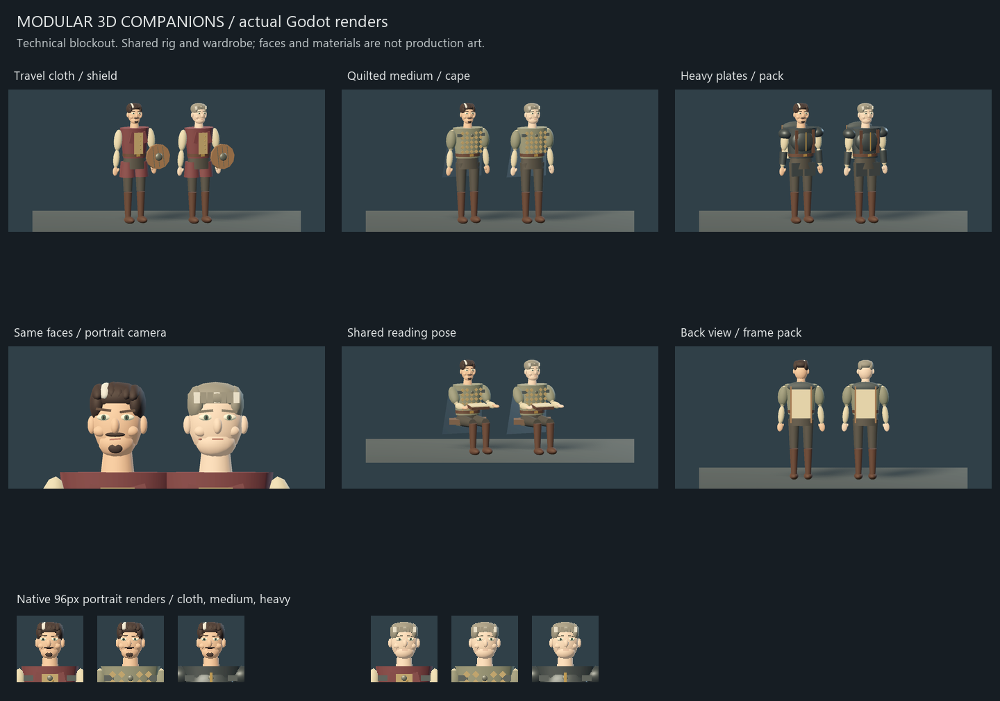
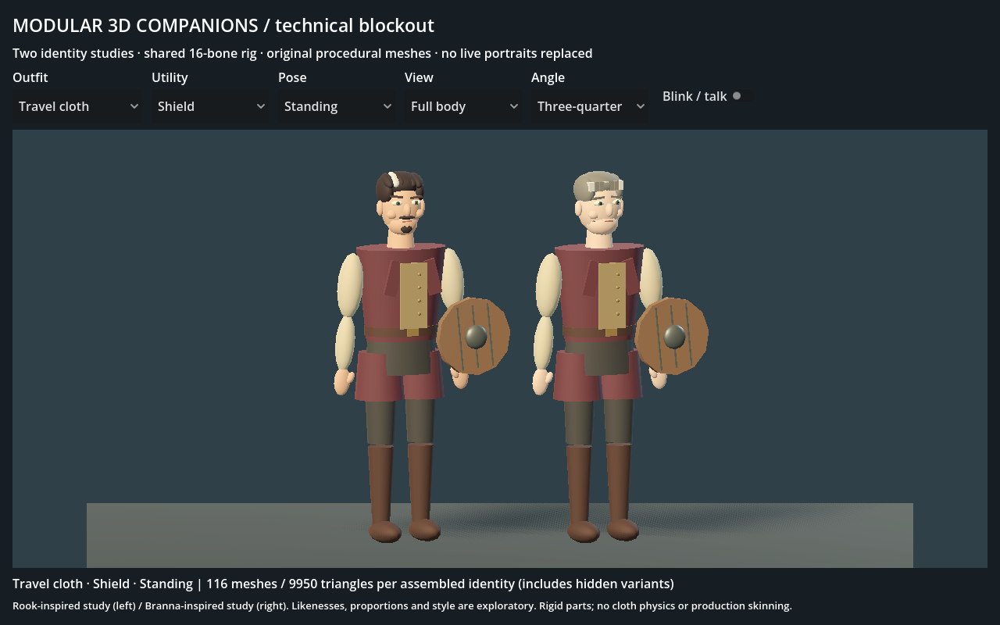
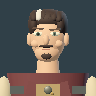
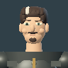
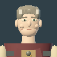
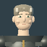
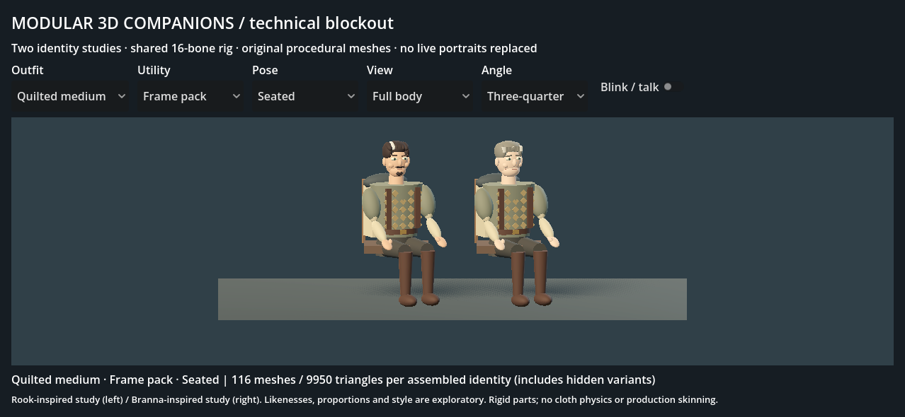

Two exploratory identities share one 16-bone body and the same wardrobe. These are original primitive meshes, not final Rook/Branna likenesses. Existing portraits and the live game are unchanged.







The faces, rigid joint seams, cape and hand-to-book fit need authored geometry/skinning. Only one body-proportion set was tested. No emotion library, cloth simulation, live equipment integration or physical iPhone benchmark is claimed. About 10k triangles and 116 mesh nodes per identity includes hidden wardrobe choices; production should merge compatible surfaces and profile visible costs.
Open tools/character_3d_trial/project.godot in Godot 4.7.2 and press F5. That isolated review lets you mix all outfits, utilities and poses. These files are independent static scene snapshots: